ตัวอย่างการทดลองใช้งานบอร์ด Sipeed Tang Nano 1K โดยใช้ภาษา VHDL#
Keywords: Sipeed Tang Nano 1K, Gowin FPGA, VHDL Coding
▷ การออกแบบวงจรดิจิทัลด้วย VHDL สำหรับการฝึกปฏิบัติและเรียนรู้ด้วยตนเอง#
การออกแบบวงจรดิจิทัลเพื่อนำไปใช้กับบอร์ด FPGA โดยทั่วไปแล้ว ก็จะใช้ภาษา HDL (Hardware Description Language) ในการเขียนโค้ด เพื่ออธิบายหรือกำหนดรูปแบบการทำงานของวงจร ภาษาที่นิยมใช้ก็ได้แก่ VHDL และ Verilog / SystemVerilog (SV)
บอร์ด FPGA ก็มีให้เลือกใช้งานหลายรูปแบบ และใช้ชิป FPGA จากผู้ผลิต เช่น Intel / Altera, AMD / Xilinx และ Lattice Semiconductor ชิป FPGA ของบริษัท Gowin Semiconductor จากประเทศจีน และบอร์ด Sipeed Tang ก็ถือว่าเป็นตัวเลือกที่น่าสนใจ เนื่องจากมีราคาไม่แพง เหมาะสำหรับผู้เริ่มต้นเรียนรู้
ในส่วนของซอฟต์แวร์ FPGA EDA สำหรับชิป Gowin FPGA ก็มีซอฟต์แวร์ Gowin EDA IDE (Educational Version) ให้ใช้งานได้ฟรี หรือ จะใช้ซอฟต์แวร์แบบ Command Line เช่น Yosys / Nextpnr / Apicula ซึ่งเป็นเครื่องมือโอเพนซอร์สสำหรับการออกแบบวงจรดิจิทัล และรองรับชิป FPGA หลายตระกูล
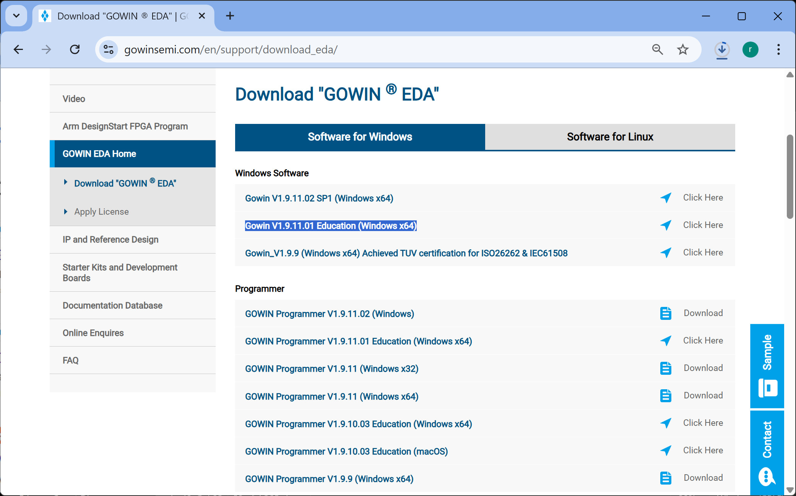
รูป: หน้าเว็บสำหรับดาวน์โหลด Gowin EDA (Educational Version) สำหรับ Windows / Linux


รูป: บอร์ด Tang Nano 1K
ในเอกสารนี้นำเสนอตัวอย่างการออกแบบวงจรดิจิทัลในระดับพื้นฐาน เพื่อสาธิตการเชื่อมต่อกับอุปกรณ์อิเล็กทรอนิกส์พื้นฐานหลายรูปแบบ โดยใช้ภาษา VHDL ในการเขียนโค้ด และได้นำไปทดลองใช้งานกับบอร์ด Sipeed Tang Nano 1K (GW1NZ-LV1) ตามรายการต่อไปนี้
rgb_led_demo: วงจรดิจิทัลเพื่อสาธิตการกำหนดสถานะลอจิกให้กับ RGB LED ที่มีอยู่บนบอร์ด Tang Nano 1Kleds_demo: วงจรดิจิทัลเพื่อสาธิตการกำหนดสถานะลอจิก จำนวน 8 บิต โดยจะต้องใช้บอร์ด FPGA ต่อใช้งานกับโมดูล LED Barrotary_encoder_demo: วงจรดิจิทัลเพื่อตรวจจับการเปลี่ยนแปลงของสัญญาณดิจิทัลจากโมดูล Rotary Encoder Switch และนำไปใช้ในการเพิ่มหรือลดระดับ 8 ระดับ โดยแสดงสถานะลอจิกด้วยโมดูล LED Bardisp_7seg_demo: วงจรดิจิทัลเพื่อแสดงค่าตัวเลข BCD แบบ 4 หลัก โดยใช้โมดูล 4-Digit 7-Segment Display และต้องใช้วิธีการควบคุมตามรูปแบบที่เรียกว่า Time-Multiplexingtm1637_driver_demo: วงจรดิจิทัลเพื่อเชื่อมต่อกับโมดูลที่มีไอซี TM1637 ทำหน้าที่ควบคุบการทำงานของ 4-Digit 7-Segment Display โดยใช้สัญญาณดิจิทัลเพียง 2 เส้น ในการเชื่อมต่อสื่อสารlcd16x2_ctrl_demo: วงจรดิจิทัลเพื่อสาธิตการควบคุมและแสดงข้อความจำนวน 2 บรรทัด โดยใช้โมดูล LCD 16x2 แบบ 4-bit data parallel (ใช้แรงดันไฟเลี้ยง +5V และใช้ตัวต้านทานปรับค่าได้สร้างแรงดันไฟฟ้าที่ขา VO สำหรับการปรับระดับความสว่าง)
ข้อสังเกต:
- โมดูลหรืออุปกรณ์ที่ได้นำมาทดลองร่วมกับบอร์ด Tang Nano เป็นอุปกรณ์ที่หาซื้อได้ทั่วไป มักนำมาใช้กับบอร์ดไมโครคอนโทรลเลอร์ (MCU) เช่น Arduino , Raspberry Pi Pico หรือ Espressif ESP32 เป็นต้น ดังนั้นผู้ใช้ที่คุ้นเคยกับการใช้งาน MCU มาบ้างแล้ว ก็สามารถลองเปรียบเทียบรูปแบบการใช้งาน MCU กับ FPGA และการเขียนโค้ดภาษา C/C++ กับ VHDL ในการเชื่อมต่อกับโมดูลหรืออุปกรณ์ในแต่ละชนิดว่า มีความเหมือน หรือแตกต่างกันอย่างไร
- ขาสัญญาณ I/O ของวงจรดิจิทัลบนบอร์ด FPGA ให้เลือกใช้แรงดันไฟฟ้า 3.3V (LVCMOS-3.3)
- โค้ดตัวอย่าง VHDL ได้นำไปทดลองใช้กับบอร์ด Tang Nano 1K เนื่องจากบอร์ดนี้มีชิป FPGA ที่มีความจุเชิงลอจิก (Logic Capacity) น้อยที่สุด (~1000 LEs (Logic Elements) ดังนั้นจึงมีราคาต่ำสุดในซีรีย์ Tang Nano แต่จะใช้ได้กับวงจรดิจิทัลที่ไม่ซับซ้อน
- ตัวอย่างโค้ด VHDL สามารถนำไปใช้ได้กับบอร์ด Tang Nano 1K / 4K / 9K (มีความจุเชิงลอจิกเพิ่มขึ้นตามลำดับ) แต่จะต้องเลือกขาสัญญาณ I/O ให้ตรงกับบอร์ดที่เลือกใช้งาน เช่น การเลือกใช้งานปุ่มกดบนบอร์ดเพื่อใช้เป็นสัญญาณอินพุตสำหรับการรีเซตวงจร ขาสัญญาณอินพุตจาก Clock บนบอร์ด (ใช้ความถี่ 27MHz ในตัวอย่าง) เป็นต้น โดยผู้ใชจะต้องกำหนดค่า ในไฟล์ Gowin Design Physical Constraints File (.cst) ให้ถูกต้อง และที่สำคัญ จะต้องเลือก FPGA Device ให้ตรงกับบอร์ดที่จะใช้งาน

รูป: การทดลองกับโมดูล Rotary Encoder Switch
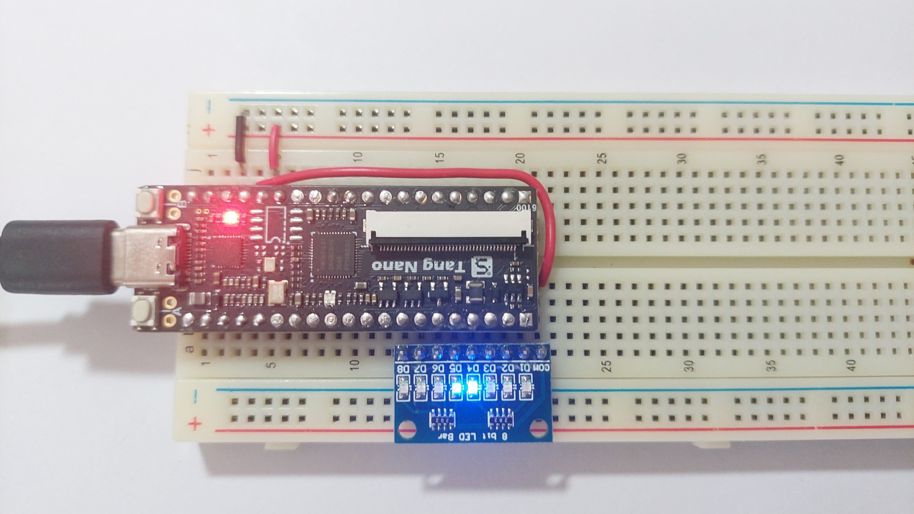
รูป: การทดลองกับโมดูล 8-level LED Bar (active-low)
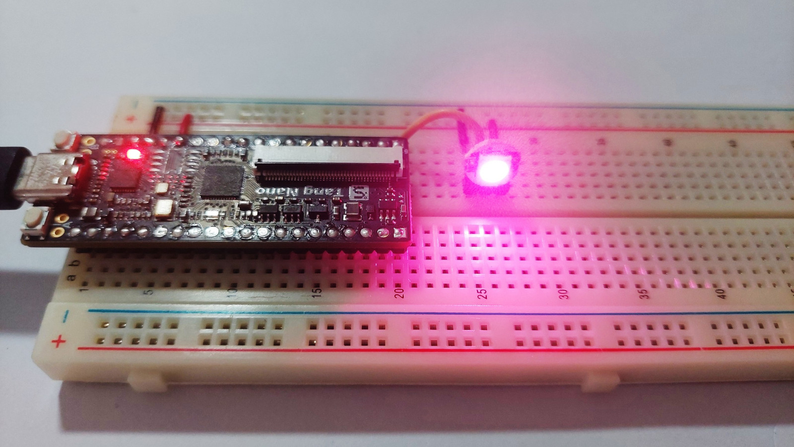
รูป: การทดลองกับโมดูล 1-Pixel WS2812B RGB LED
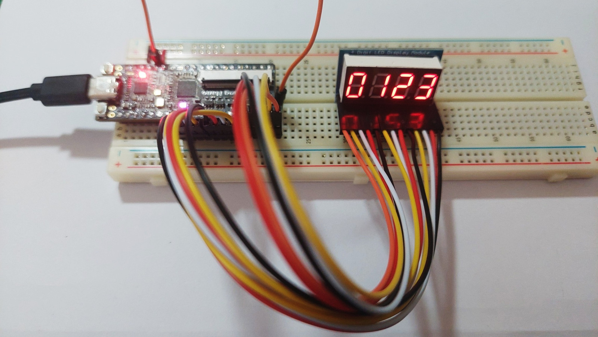
รูป: การทดลองกับโมดูล 4-Digit 7-Segment Display (Timing Multiplexing Control)
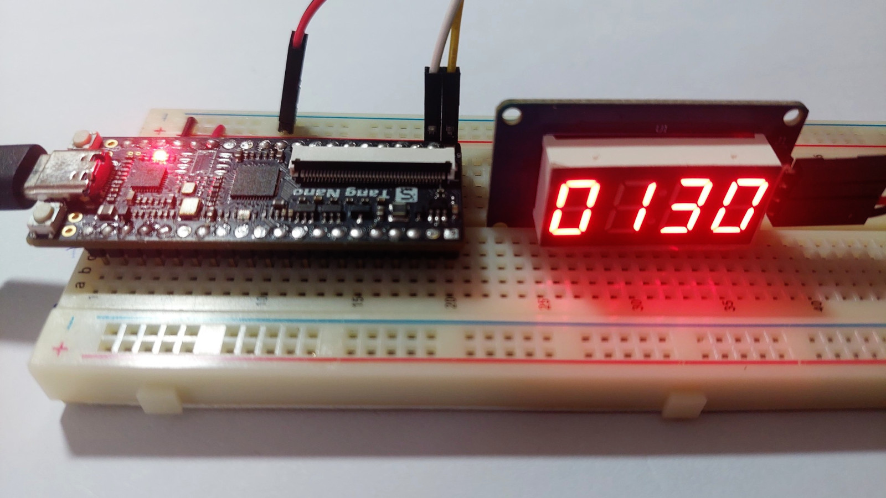
รูป: การทดลองกับโมดูล TM1637-based 4-Digit 7-Segment Display
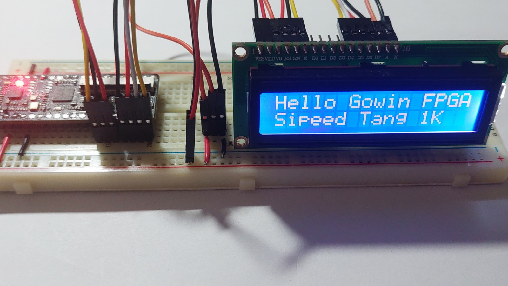
รูป: การทดลองกับโมดูล LCD 16x2 LCD (4-bit data parallel)
Zip Files:
rgb_led_demo.zipleds_demo.ziprotary_encoder_demo.zipdisp_7seg_demo.ziptm1637_driver_demo.ziplcd16x2_ctrl_demo.zip
▷ แนวทางการใช้งาน Gowin EDA (Educational)#
เปิดใช้งานซอฟต์แวร์ Gowin EDA (Education) แล้วสร้างโปรเจกต์ใหม่
ระบุไดเรกทอรี และชื่อของโปรเจกต์ จากนั้นไปนำไฟล์ตัวอย่าง เช่น .vhd, .cst และ .sdc
ไปใส่ไว้ในไดเรกทอรีย่อย src ของโปรเจกต์ จากนั้นให้ทำขั้นตอน Synthesize
และ Place & Route ตามลำดับ เพื่อให้ได้ไฟล์ Bitstream (.fs)
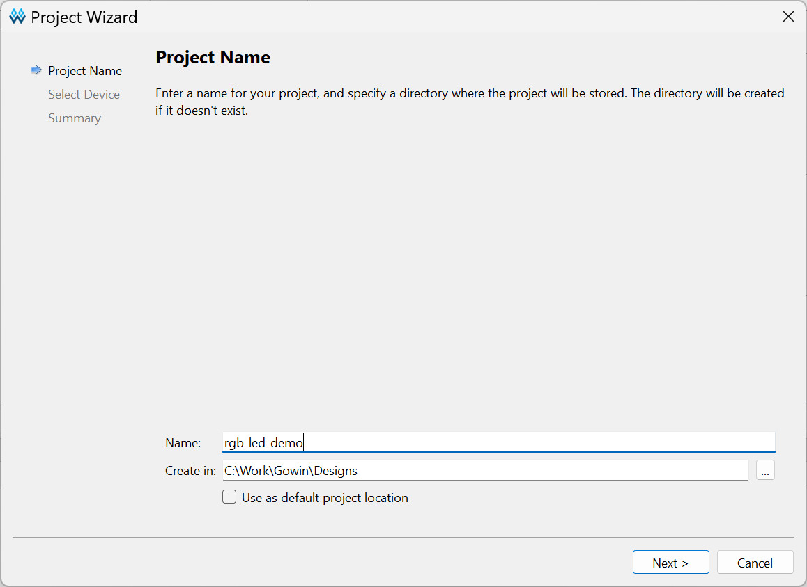
รูป: ขั้นตอนการเริ่มต้นสร้างโปรเจกต์ใหม่
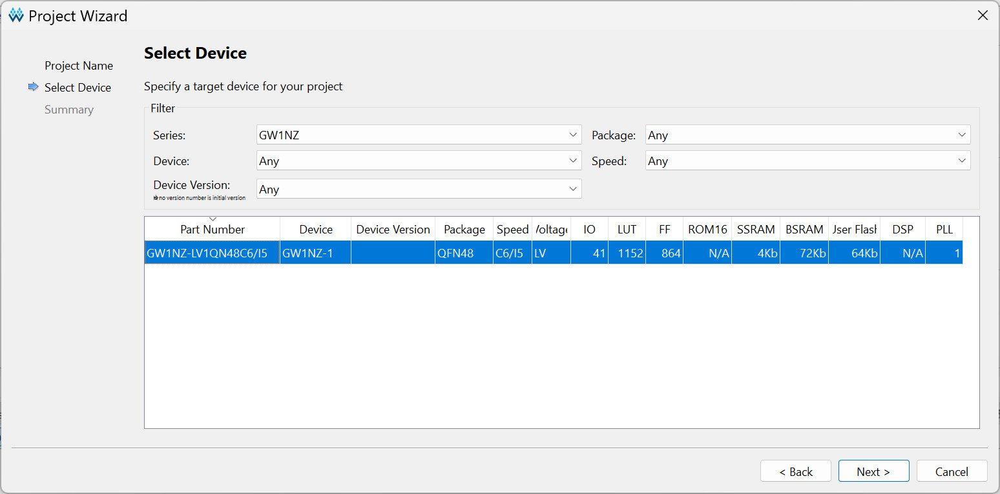
รูป: การเลือกชิป FPGA ให้ตรงกับอุปกรณ์ที่ต้องการใช้งาน (สำหรับบอร์ด Tang Nano 1K)
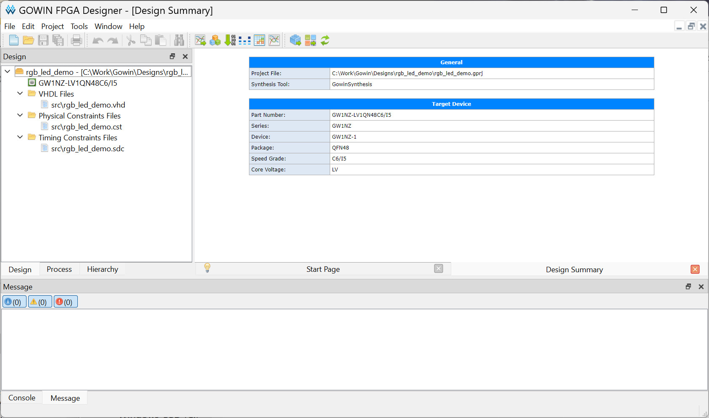
รูป: การเพิ่มไฟล์จากซอร์สโค้ดจากวงจรตัวอย่าง (rgb_led) ไว้ในโปรเจกต์
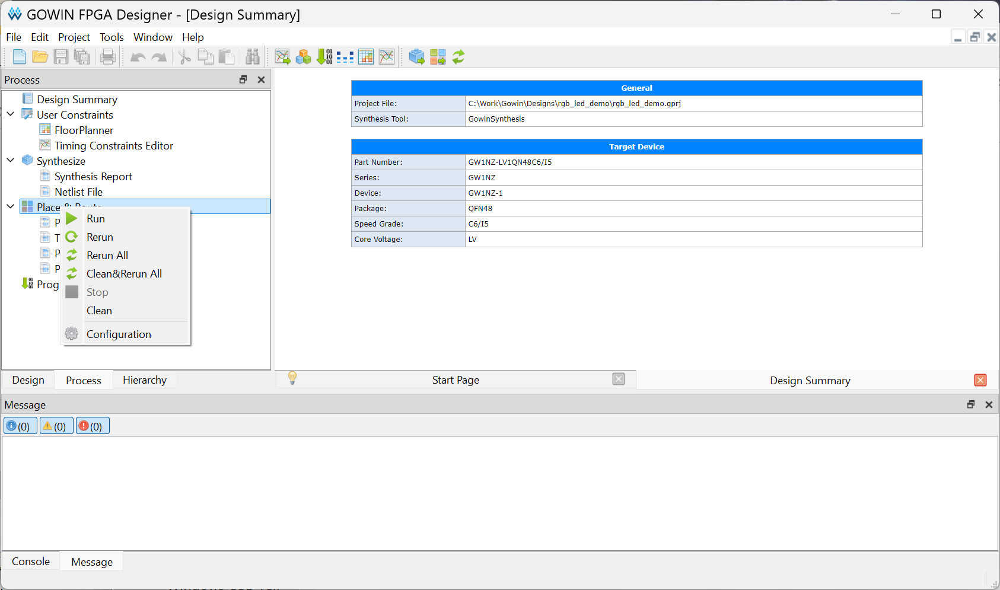
รูป: การทำขั้นตอนเพื่อคอมไพล์ และแปลงโค้ดให้เป็นวงจร (FPGA Design Process)
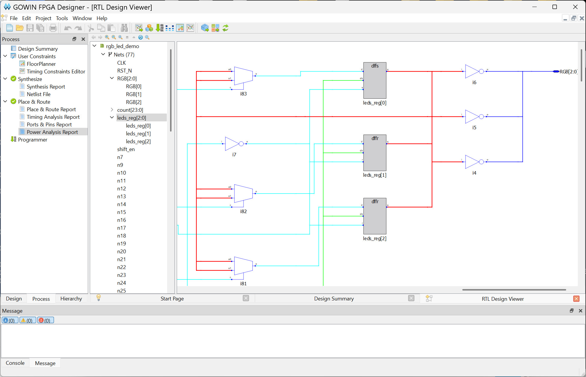
รูป: การแสดงวงจรที่ได้จากการสังเคราะห์วงจร (Synthesized Digital Design) โดยใช้ RTL Design Viewer
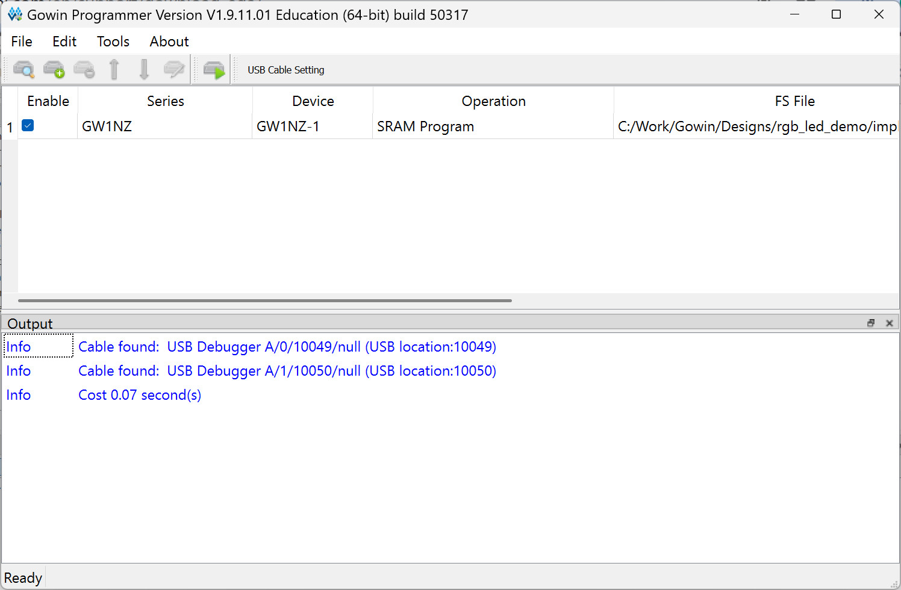
รูป: การเปิดใช้งาน Gowin Programmer และเชื่อมต่อกับบอร์ด FPGA
บทความที่เกี่ยวข้อง
- การใช้งานซอฟต์แวร์ Open Source FPGA Design Tools สำหรับบอร์ด Sipeed Tang Nano FPGA
- การติดตั้งและใช้งานซอฟต์แวร์ Gowin IDE Standard Edition และใช้งานกับบอร์ด Sipeed Tang Nano FPGA
This work is licensed under a Creative Commons Attribution-ShareAlike 4.0 International License.
Created: 2025-06-20 | Last Updated: 2025-06-20